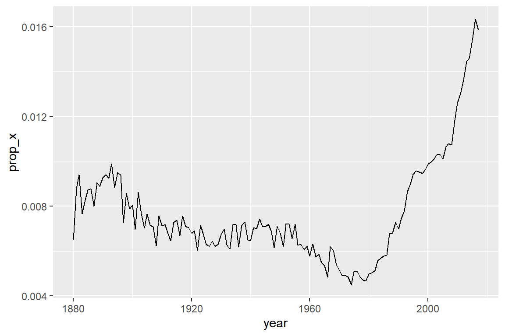

6 장 Tidyverse를 활용한 데이터 다루기
R의 모습은 tidyverse 이전과 이후로 완전히 구분된다고 할 수 있다. 데이터 다루기와 그래프 성능이 비교할 수 없을 만큼 향상되었고, 복잡한 분석 과정이 대폭 단순화되어 매우 효율적인 분석이 가능해졌다. 이러한 발전으로 인하여 Data science를 위한 최적의 프로그램으로 자리매김을 확고하게 했다고 할 수 있다. 이 장에서는 core tidyverse에 속한 패키지 중 자료의 형태를 통계분석이 가능하도록 다듬는 작업에 사용되는 tidyr, 문자 다루기에 유용한 stringr, 그리고 자료 결합에 유용한 dplyr에 속한 몇몇 함수들의 사용법을 살펴보겠다.
6.1 tidyr로 tidy 데이터 만들기
Tidy 데이터 세트는 하나의 열이 한 변수의 자료로만 이루어져 있고, 하나의 행은 한 관찰값의 자료로만 이루어져 있는 데이터 세트를 의미한다. Tidy 자료의 예로서 패키지 tidyr에 있는 데이터 프레임 table1을 살펴보자.
table1
## # A tibble: 6 × 4
## country year cases population
## <chr> <dbl> <dbl> <dbl>
## 1 Afghanistan 1999 745 19987071
## 2 Afghanistan 2000 2666 20595360
## 3 Brazil 1999 37737 172006362
## 4 Brazil 2000 80488 174504898
## 5 China 1999 212258 1272915272
## 6 China 2000 213766 1280428583적절한 통계분석을 실시하기 위해 반드시 갖추어야 할 데이터 세트의 형태라고 할 수 있다. 하지만 실제 접하게 될 데이터 세트는 tidy 데이터가 아닌 경우가 상당히 많이 있으며, 이런 경우 데이터 세트를 통계분석이 가능한 형태로 변경하는데 많은 시간과 노력이 필요하게 된다.
패키지 tidyr은 통계분석이 불가능한 온갖 형태의 데이터 세트를 tidy 데이터 세트로 전환하는 작업을 수행하기 위한 패키지이다.
6.1.1 데이터 피벗: pivot_longer()와 pivot_wider()
통계분석이 불가능한 형태의 데이터 세트가 공통적으로 가지고 있는 주된 문제는 다음과 같다.
한 변수의 자료가 여러 개의 열에 입력되어 있다.
한 관찰값의 자료가 여러 개의 행에 입력되어 있다.
첫 번째 문제는 여러 열에 입력된 한 변수의 자료를 하나의 열로 모아야 해결된다. 따라서 원래 데이터 프레임보다 열의 개수가 줄어든 형태, 즉 더 길어진 형태의 데이터 프레임으로 변환시키는 작업이 되며, 함수 pivot_longer()로 하게 된다.
두 번째 문제는 하나의 열에 여러 변수의 자료가 입력된 형태가 되는 것이므로 열의 개수를 늘려서 각 변수를 따로따로 입력해야 한다. 따라서 원래 데이터 프레임보다 열의 개수가 늘어난 형태, 즉 더 넓어진 형태의 데이터 프레임으로 변환시키는 작업이 되며, 함수 pivot_wider()로 하게 된다.
1. 함수 pivot_longer()
패키지 tidyr에 있는 데이터 프레임 table4a를 살펴보자. 숫자로 이름이 시작된 두 번째와 세 번째 변수의 이름은 backtick 기호로 감싸져 있다.
table4a
## # A tibble: 3 × 3
## country `1999` `2000`
## <chr> <dbl> <dbl>
## 1 Afghanistan 745 2666
## 2 Brazil 37737 80488
## 3 China 212258 213766데이터 프레임 table4a는 table1의 변수 cases가 두 개의 열에 흩어져 입력되어 있는 형태이다. 이것을 table1과 같은 tidy 데이터 형태로 변형하기 위해서는 열 이름인 1999와 2000이 변수 year의 자료가 되어야 하고, 두 열에 흩어진 자료는 변수 cases의 자료가 되어야 한다.
함수 pivot_longer()의 기본적인 사용법은 pivot_longer(data, cols, names_to = “name”, values_to = “value”)이다. data는 피벗 대상이 되는 데이터 프레임이고, cols에는 한 변수의 자료가 흩어져 입력된 열을 <tidy-select> 방식으로 선택하면 된다. 또한 names_to에는 선택된 열들의 이름이 자료로 입력될 새로운 열 이름을 지정하고, values_to에는 흩어진 자료들을 하나로 합쳐서 입력할 열 이름을 지정하는 것이다.
table4a |>
pivot_longer(-country, names_to = "year", values_to = "cases")
## # A tibble: 6 × 3
## country year cases
## <chr> <chr> <dbl>
## 1 Afghanistan 1999 745
## 2 Afghanistan 2000 2666
## 3 Brazil 1999 37737
## 4 Brazil 2000 80488
## 5 China 1999 212258
## 6 China 2000 213766다른 예제로 데이터 프레임 df_1에 어떤 제품의 3년간 분기별 판매량이 입력되어 있다고 하자.
df_1 <- tibble(Year = 2015:2017, Q1 = c(15, 12, 22),
Q2 = c(16, 13, 23), Q3 = c(19, 27, 24),
Q4 = c(17, 23, 20))
df_1
## # A tibble: 3 × 5
## Year Q1 Q2 Q3 Q4
## <int> <dbl> <dbl> <dbl> <dbl>
## 1 2015 15 16 19 17
## 2 2016 12 13 27 23
## 3 2017 22 23 24 20df_1은 시계열 자료를 표현할 때 일반적으로 사용되는 형태로 구성되어 있다. 그러나 판매량이라는 한 변수의 자료가 4개의 열에 흩어져 있어서 tidy 데이터의 형태는 아니며, 이것을 tidy 데이터로 변환하는 과정은 다음과 같다.
df_1 |>
pivot_longer(-Year, names_to = "Qtr", values_to = "Sales")
## # A tibble: 12 × 3
## Year Qtr Sales
## <int> <chr> <dbl>
## 1 2015 Q1 15
## 2 2015 Q2 16
## 3 2015 Q3 19
## 4 2015 Q4 17
## 5 2016 Q1 12
## 6 2016 Q2 13
## 7 2016 Q3 27
## 8 2016 Q4 23
## 9 2017 Q1 22
## 10 2017 Q2 23
## 11 2017 Q3 24
## 12 2017 Q4 20- 예제:
tidyr::billboard
데이터 프레임 tidyr::billboard에는 2000년 Billboard Top 100에 오른 노래의 가수(artist)와 노래 제목(track), top 100 리스트에 들어간 날짜(date.entered), 그리고 리스트에 오른 이후의 매주 순위가 변수wk1부터 wk76까지 입력되어 있다. 해당 노래가 top 100 리스트에서 제외되면 NA가 입력되기 때문에, 변수 wk1부터 wk76에는 NA가 많이 입력되어 있다. 특히 wk66부터 wk76까지는 모든 자료가 NA로 입력되어서 변수 유형이 논리형으로 되어 있다.
우리가 원하는 첫 번째 분석은 매주 연속해서 top 100에 올라있던 노래만을 대상으로 리스트에 머물러 있던 최장 기간과 그 기간 중 최고 순위를 알아내는 것이다.
billboard |>
print(n = 5)
## # A tibble: 317 × 79
## artist track date.entered wk1 wk2 wk3 wk4 wk5 wk6 wk7 wk8
## <chr> <chr> <date> <dbl> <dbl> <dbl> <dbl> <dbl> <dbl> <dbl> <dbl>
## 1 2 Pac Baby… 2000-02-26 87 82 72 77 87 94 99 NA
## 2 2Ge+her The … 2000-09-02 91 87 92 NA NA NA NA NA
## 3 3 Doors Do… Kryp… 2000-04-08 81 70 68 67 66 57 54 53
## 4 3 Doors Do… Loser 2000-10-21 76 76 72 69 67 65 55 59
## 5 504 Boyz Wobb… 2000-04-15 57 34 25 17 17 31 36 49
## # ℹ 312 more rows
## # ℹ 68 more variables: wk9 <dbl>, wk10 <dbl>, wk11 <dbl>, wk12 <dbl>,
## # wk13 <dbl>, wk14 <dbl>, wk15 <dbl>, wk16 <dbl>, wk17 <dbl>, wk18 <dbl>,
## # wk19 <dbl>, wk20 <dbl>, wk21 <dbl>, wk22 <dbl>, wk23 <dbl>, wk24 <dbl>,
## # wk25 <dbl>, wk26 <dbl>, wk27 <dbl>, wk28 <dbl>, wk29 <dbl>, wk30 <dbl>,
## # wk31 <dbl>, wk32 <dbl>, wk33 <dbl>, wk34 <dbl>, wk35 <dbl>, wk36 <dbl>,
## # wk37 <dbl>, wk38 <dbl>, wk39 <dbl>, wk40 <dbl>, wk41 <dbl>, wk42 <dbl>, …이런 구조의 데이터는 매우 흔하게 볼 수 있는 것이며, tidy 데이터 구조로 오해하기도 한다.
그러나 변수 wk1부터 wk76은 모두 노래의 ’순위’이기 때문에 하나의 열에 입력이 되어야 적절한 통계분석이 가능하게 된다.
따라서 열 wk1부터 wk76까지에 입력된 자료는 rank라는 이름의 열로 모으고, 열의 이름은 week라는 이름의 열에 입력해 보자. 이 변환 작업은 cols에 wk1:wk76 또는 starts_with("wk")를, names_to에 "week"를, 그리고 values_to에 "rank"를 각각 지정하면 된다.
billboard |>
pivot_longer(
cols = wk1:wk76,
names_to = "week",
values_to = "rank"
)
## # A tibble: 24,092 × 5
## artist track date.entered week rank
## <chr> <chr> <date> <chr> <dbl>
## 1 2 Pac Baby Don't Cry (Keep... 2000-02-26 wk1 87
## 2 2 Pac Baby Don't Cry (Keep... 2000-02-26 wk2 82
## 3 2 Pac Baby Don't Cry (Keep... 2000-02-26 wk3 72
## 4 2 Pac Baby Don't Cry (Keep... 2000-02-26 wk4 77
## 5 2 Pac Baby Don't Cry (Keep... 2000-02-26 wk5 87
## 6 2 Pac Baby Don't Cry (Keep... 2000-02-26 wk6 94
## 7 2 Pac Baby Don't Cry (Keep... 2000-02-26 wk7 99
## 8 2 Pac Baby Don't Cry (Keep... 2000-02-26 wk8 NA
## 9 2 Pac Baby Don't Cry (Keep... 2000-02-26 wk9 NA
## 10 2 Pac Baby Don't Cry (Keep... 2000-02-26 wk10 NA
## # ℹ 24,082 more rows변수 week에는 문자형 자료가 입력되어 있는데, 정수형으로 전환되면 더 효과적인 분석이 가능할 것이다.
또한 변수 rank에는 많은 NA가 포함되어 있는데, NA가 입력된 행을 제거하는 것이 분석에 도움이 될 것이다.
이 작업은 함수 pivot_longer()의 추가 기능을 사용해서 진행하는 방법과 함수 mutate() 등을 이어서 사용해서 진행하는 방법을 생각해 볼 수 있다.
먼저 함수 pivot_longer()의 추가 기능을 사용해 보자.
변수 week를 정수형으로 전환하기 위해서는 문자열 "wk"를 제거하고, 변수의 유형을 정수형으로 바꾸면 되는데,
함수 pivot_longer()에 names_prefix와 names_transform을 추가하면 된다.
names_prefix에는 names_to에 입력된 열 이름에서 제거하려는 문자열을 정규표현식으로 지정하면 되는데, 첫 문자부터 제거하는 경우에만 적용이 된다. 이 경우에는 그냥 "wk"를 지정하면 된다.
names_transform은 열의 유형을 변경할 때 사용하는 것으로 열이름 = 유형 변환 함수가 입력된 리스트를 지정하면 된다.
또한 변수 rank에 NA가 입력된 행을 제거하는 것은 values_drop_na에 TRUE를 지정하면 values_to로 지정된 열에 NA가 입력되는 행은 자동으로 제거된다. 자료의 특성으로 NA가 많을 수밖에 없는 경우에는 필요한 옵션이 된다.
top_100 <- billboard |>
pivot_longer(
cols = wk1:wk76,
names_to = "week",
names_prefix = "wk",
names_transform = list(week = as.integer),
values_to = "rank",
values_drop_na = TRUE
)
top_100 |>
print(n=5)
## # A tibble: 5,307 × 5
## artist track date.entered week rank
## <chr> <chr> <date> <int> <dbl>
## 1 2 Pac Baby Don't Cry (Keep... 2000-02-26 1 87
## 2 2 Pac Baby Don't Cry (Keep... 2000-02-26 2 82
## 3 2 Pac Baby Don't Cry (Keep... 2000-02-26 3 72
## 4 2 Pac Baby Don't Cry (Keep... 2000-02-26 4 77
## 5 2 Pac Baby Don't Cry (Keep... 2000-02-26 5 87
## # ℹ 5,302 more rows이번에는 함수 mutate() 등을 이어서 사용하는 방법을 살펴보자.
변수 week의 자료에서 문자열 "wk"를 제거하고 변수의 유형을 정수형으로 바꾸는 작업은 gsub()와 as.integer()를 mutate()에서 사용하면 된다.
billboard |>
pivot_longer(
cols = wk1:wk76,
names_to = "week",
values_to = "rank"
) |>
mutate(week = gsub("wk", "", week)) |>
mutate(week = as.integer(week))
## # A tibble: 24,092 × 5
## artist track date.entered week rank
## <chr> <chr> <date> <int> <dbl>
## 1 2 Pac Baby Don't Cry (Keep... 2000-02-26 1 87
## 2 2 Pac Baby Don't Cry (Keep... 2000-02-26 2 82
## 3 2 Pac Baby Don't Cry (Keep... 2000-02-26 3 72
## 4 2 Pac Baby Don't Cry (Keep... 2000-02-26 4 77
## 5 2 Pac Baby Don't Cry (Keep... 2000-02-26 5 87
## 6 2 Pac Baby Don't Cry (Keep... 2000-02-26 6 94
## 7 2 Pac Baby Don't Cry (Keep... 2000-02-26 7 99
## 8 2 Pac Baby Don't Cry (Keep... 2000-02-26 8 NA
## 9 2 Pac Baby Don't Cry (Keep... 2000-02-26 9 NA
## 10 2 Pac Baby Don't Cry (Keep... 2000-02-26 10 NA
## # ℹ 24,082 more rows숫자가 포함된 문자형 벡터에서 문자나 기호 등을 제거하고 숫자형 벡터로 전환하는 작업은 함수 readr::parse_number()로도 진행할 수 있다.
데이터 프레임에서 NA가 입력된 행을 제거하는 작업은 함수 tidyr::drop_na()로 진행할 수 있다.
변수를 지정하면 해당 변수에 NA가 있는 행을 제거하게 된다.
변수는 <tidy-select> 방식으로 지정할 수 있으며, 생략하면 모든 변수를 대상으로 NA가 있는지 여부를 확인하게 된다.
함수 parse_number()와 drop_na()를 사용해서 필요한 작업을 진행해 보자.
billboard |>
pivot_longer(
cols = wk1:wk76,
names_to = "week",
values_to = "rank"
) |>
mutate(week = parse_number(week)) |>
drop_na(rank)
## # A tibble: 5,307 × 5
## artist track date.entered week rank
## <chr> <chr> <date> <dbl> <dbl>
## 1 2 Pac Baby Don't Cry (Keep... 2000-02-26 1 87
## 2 2 Pac Baby Don't Cry (Keep... 2000-02-26 2 82
## 3 2 Pac Baby Don't Cry (Keep... 2000-02-26 3 72
## 4 2 Pac Baby Don't Cry (Keep... 2000-02-26 4 77
## 5 2 Pac Baby Don't Cry (Keep... 2000-02-26 5 87
## 6 2 Pac Baby Don't Cry (Keep... 2000-02-26 6 94
## 7 2 Pac Baby Don't Cry (Keep... 2000-02-26 7 99
## 8 2Ge+her The Hardest Part Of ... 2000-09-02 1 91
## 9 2Ge+her The Hardest Part Of ... 2000-09-02 2 87
## 10 2Ge+her The Hardest Part Of ... 2000-09-02 3 92
## # ℹ 5,297 more rows이제 데이터 프레임 top_100을 대상으로 원하는 분석을 할 수 있게 되었다. 매주 연속해서 top 100에 올라있던 노래만을 대상으로 리스트에 머물러 있던 최장 기간과 그 기간 중 최고 순위는 다음과 같이 알아볼 수 있다.
top_100 |>
group_by(artist, track) |>
filter(n() == max(week)) |>
summarise(period = max(week), top_rank = min(rank)) |>
ungroup() |>
arrange(desc(period)) |>
print(n=5)
## # A tibble: 302 × 4
## artist track period top_rank
## <chr> <chr> <int> <dbl>
## 1 3 Doors Down Kryptonite 53 3
## 2 Hill, Faith Breathe 53 2
## 3 Creed With Arms Wide Open 47 1
## 4 Joe I Wanna Know 44 4
## 5 Vertical Horizon Everything You Want 41 1
## # ℹ 297 more rows두 번째 분석으로써 연속해서 1위를 유지했던 노래 중 가장 오랫동안 정상을 유지했던 2곡을 알아보자.
top_100 |>
filter(rank == 1) |>
group_by(artist, track) |>
filter((max(week) - min(week) + 1) == n()) |>
count(sort = TRUE) |>
print(n=2)
## # A tibble: 16 × 3
## # Groups: artist, track [16]
## artist track n
## <chr> <chr> <int>
## 1 Destiny's Child Independent Women Pa... 11
## 2 Santana Maria, Maria 10
## # ℹ 14 more rows- 예제:
tidyr::who2
데이터 프레임 who2의 내용을 확인해 보자.
who2
## # A tibble: 7,240 × 58
## country year sp_m_014 sp_m_1524 sp_m_2534 sp_m_3544 sp_m_4554 sp_m_5564
## <chr> <dbl> <dbl> <dbl> <dbl> <dbl> <dbl> <dbl>
## 1 Afghanistan 1980 NA NA NA NA NA NA
## 2 Afghanistan 1981 NA NA NA NA NA NA
## 3 Afghanistan 1982 NA NA NA NA NA NA
## 4 Afghanistan 1983 NA NA NA NA NA NA
## 5 Afghanistan 1984 NA NA NA NA NA NA
## 6 Afghanistan 1985 NA NA NA NA NA NA
## 7 Afghanistan 1986 NA NA NA NA NA NA
## 8 Afghanistan 1987 NA NA NA NA NA NA
## 9 Afghanistan 1988 NA NA NA NA NA NA
## 10 Afghanistan 1989 NA NA NA NA NA NA
## # ℹ 7,230 more rows
## # ℹ 50 more variables: sp_m_65 <dbl>, sp_f_014 <dbl>, sp_f_1524 <dbl>,
## # sp_f_2534 <dbl>, sp_f_3544 <dbl>, sp_f_4554 <dbl>, sp_f_5564 <dbl>,
## # sp_f_65 <dbl>, sn_m_014 <dbl>, sn_m_1524 <dbl>, sn_m_2534 <dbl>,
## # sn_m_3544 <dbl>, sn_m_4554 <dbl>, sn_m_5564 <dbl>, sn_m_65 <dbl>,
## # sn_f_014 <dbl>, sn_f_1524 <dbl>, sn_f_2534 <dbl>, sn_f_3544 <dbl>,
## # sn_f_4554 <dbl>, sn_f_5564 <dbl>, sn_f_65 <dbl>, ep_m_014 <dbl>, …이 데이터는 1908년부터 2013년까지 219개 나라를 대상으로 결핵에 걸린 환자에 대한 것이다.
변수 country와 year에는 조사한 나라 이름과 조사 연도가 입력되어 있다.
나머지 변수는 세 가지 정보가 밑줄로 구분되어 변수 이름을 구성하고 있다.
첫 번째 부분은 폐결핵 진단 방법을 나타내는 것으로서 “rel”, “sn”, “sp”, “ep” 중 하나이고,
두 번째 부분은 성별을 “f” 혹은 “m”으로 나타내고 있고,
세 번째 부분은 나이 그룹으로서 “014”는 0 ~ 14세, “1524”는 15 ~ 24세 등을 나타내고 있다.
따라서 변수 sp_m_014를 포함한 56개 변수를 하나의 변수로 통합하지 말고, 세 변수로 나누어 통합하는 것이 필요한 데이터가 된다.
통합 대상 변수를 세 변수로 나누어 통합하는 방법은 names_to에 길이가 3인 문자형 벡터로 변수 이름을 지정하고,
names_sep에 통합 대상 변수 이름을 구분하는 구분자를 지정하면 된다.
또한 결핵 환자 수가 입력되는 변수 count에 NA가 입력된 행은 모두 삭제하도록 하자.
who2 |>
pivot_longer(
cols = !(country:year),
names_to = c("diagnosis", "gender", "age"),
names_sep = "_",
values_to = "count"
) |>
drop_na(count)
## # A tibble: 76,046 × 6
## country year diagnosis gender age count
## <chr> <dbl> <chr> <chr> <chr> <dbl>
## 1 Afghanistan 1997 sp m 014 0
## 2 Afghanistan 1997 sp m 1524 10
## 3 Afghanistan 1997 sp m 2534 6
## 4 Afghanistan 1997 sp m 3544 3
## 5 Afghanistan 1997 sp m 4554 5
## 6 Afghanistan 1997 sp m 5564 2
## 7 Afghanistan 1997 sp m 65 0
## 8 Afghanistan 1997 sp f 014 5
## 9 Afghanistan 1997 sp f 1524 38
## 10 Afghanistan 1997 sp f 2534 36
## # ℹ 76,036 more rows2. 함수 pivot_wider()
패키지 tidyr에 있는 데이터 프레임 table2를 살펴보자.
table2
## # A tibble: 12 × 4
## country year type count
## <chr> <dbl> <chr> <dbl>
## 1 Afghanistan 1999 cases 745
## 2 Afghanistan 1999 population 19987071
## 3 Afghanistan 2000 cases 2666
## 4 Afghanistan 2000 population 20595360
## 5 Brazil 1999 cases 37737
## 6 Brazil 1999 population 172006362
## 7 Brazil 2000 cases 80488
## 8 Brazil 2000 population 174504898
## 9 China 1999 cases 212258
## 10 China 1999 population 1272915272
## 11 China 2000 cases 213766
## 12 China 2000 population 1280428583table2는 개별 국가에 대한 연간 자료인데, 이것이 두 개의 행에 나뉘어 입력되어 있다. 따라서 하나의 열(type)에 두 변수(cases와 population)의 자료가 입력되어 있는 것이다. 이렇게 하나의 열에 입력된 여러 변수의 자료를 분산시키는 작업은 함수 pivot_wider()로 할 수 있다.
기본적인 사용법은 pivot_wider(data, names_from = name, values_from = value)이다. data는 피벗 대상이 되는 데이터 프레임이고, names_from과values_from에는 새롭게 추가되는 열들의 이름이 입력되어 있는 열과 자료가 입력되어 있는 열을 각각 지정하는 것이다.
table2의 경우에는 type에 열들의 이름이 입력되어 있고, 자료는 count에 입력되어 있기 때문에, names_from에는 type을, values_from에는 count를 각각 지정하면 된다.
table2 |>
pivot_wider(names_from = type, values_from = count)
## # A tibble: 6 × 4
## country year cases population
## <chr> <dbl> <dbl> <dbl>
## 1 Afghanistan 1999 745 19987071
## 2 Afghanistan 2000 2666 20595360
## 3 Brazil 1999 37737 172006362
## 4 Brazil 2000 80488 174504898
## 5 China 1999 212258 1272915272
## 6 China 2000 213766 1280428583다른 예제로 세 명의 신장과 체중을 입력한 데이터 프레임 df_2를 만들어 보자.
df_2 <- tibble(Name = rep(c("Kim","Park","Lee"), each = 2),
type = rep(c("Height","Weight"), times = 3),
measure = c(170, 75, 165, 63, 175, 85)
)
df_2
## # A tibble: 6 × 3
## Name type measure
## <chr> <chr> <dbl>
## 1 Kim Height 170
## 2 Kim Weight 75
## 3 Park Height 165
## 4 Park Weight 63
## 5 Lee Height 175
## 6 Lee Weight 85df_2는 세 명의 신장과 체중에 대한 자료이다. 같은 행에 입력되어야 할 한 사람의 자료가 두 행에 나뉘어져 입력되어서, 한 열에 두 변수의 자료가 입력되었다. df_2를 tidy 데이터로 변환하는 과정은 다음과 같다.
df_2 |>
pivot_wider(names_from = type, values_from = measure)
## # A tibble: 3 × 3
## Name Height Weight
## <chr> <dbl> <dbl>
## 1 Kim 170 75
## 2 Park 165 63
## 3 Lee 175 85- 예제:
tidyr::fish_encounters
이 데이터 프레임은 태그를 부착한 19마리 물고기(fish)가 어떤 강을 따라 이동하는 동안 특정 지점(station)에서 움직임이 관측됐는지 여부(seen)를 기록한 자료이다. 움직임이 관측된 station만 자료에 나타나 있어서 변수 seen은 모든 행에서 1을 값으로 갖고 있다.
fish_encounters |>
print(n = 5)
## # A tibble: 114 × 3
## fish station seen
## <fct> <fct> <int>
## 1 4842 Release 1
## 2 4842 I80_1 1
## 3 4842 Lisbon 1
## 4 4842 Rstr 1
## 5 4842 Base_TD 1
## # ℹ 109 more rows물고기의 움직임이 관측되지 않은 지점에 대한 자료도 중요한 정보를 담고 있다고 할 수 있는데, 지금의 구조에서는 그 정보를 얻을 수 없게 되어 있다. 물고기마다 모든 지점에서의 움직임 관측 여부를 표현하기 위해서는 변수 station에 입력된 각 지점이 변수로 전환되어야 한다.
fish_encounters |>
pivot_wider(names_from = station,
values_from = seen
) |>
print(n = 5)
## # A tibble: 19 × 12
## fish Release I80_1 Lisbon Rstr Base_TD BCE BCW BCE2 BCW2 MAE MAW
## <fct> <int> <int> <int> <int> <int> <int> <int> <int> <int> <int> <int>
## 1 4842 1 1 1 1 1 1 1 1 1 1 1
## 2 4843 1 1 1 1 1 1 1 1 1 1 1
## 3 4844 1 1 1 1 1 1 1 1 1 1 1
## 4 4845 1 1 1 1 1 NA NA NA NA NA NA
## 5 4847 1 1 1 NA NA NA NA NA NA NA NA
## # ℹ 14 more rows움직임이 관측되지 않은 지점에 대해서는 입력된 자료가 없기 때문에 해당 위치에 NA가 표시되었다.
하지만 관측이 안된 것은 변수 seen의 값이 0이 되는 것이므로 NA를 0으로 바꾸는 것이 더 좋을 것이다.
이렇게 열을 확장하는 과정에서 발생할 수 있는 NA 대신 다른 값을 입력해야 할 때에는 옵션 values_fill에 대신 입력하려는 값을 지정하면 된다.
fish_encounters |>
pivot_wider(names_from = station,
values_from = seen,
values_fill = 0
) |>
print(n = 5)
## # A tibble: 19 × 12
## fish Release I80_1 Lisbon Rstr Base_TD BCE BCW BCE2 BCW2 MAE MAW
## <fct> <int> <int> <int> <int> <int> <int> <int> <int> <int> <int> <int>
## 1 4842 1 1 1 1 1 1 1 1 1 1 1
## 2 4843 1 1 1 1 1 1 1 1 1 1 1
## 3 4844 1 1 1 1 1 1 1 1 1 1 1
## 4 4845 1 1 1 1 1 0 0 0 0 0 0
## 5 4847 1 1 1 0 0 0 0 0 0 0 0
## # ℹ 14 more rows관측이 되지 않은 지점에서 변수 seen에 0을 대신 입력하는 다른 방법은 함수 tidyr::replace_na()를 사용하는 것이다.
함수 replace_na()는 다음과 같이 벡터에 있는 NA를 다른 값으로 변환하는 기능이 있다.
데이터 프레임 fish_encounters를 pivot_wider()로 확장한 후에 변수 fish를 제외한 모든 변수의 NA를 0으로 대체해 보자.
fish_encounters |>
pivot_wider(names_from = station,
values_from = seen
) |>
mutate(across(!fish, ~ replace_na(.x, 0)))
## # A tibble: 19 × 12
## fish Release I80_1 Lisbon Rstr Base_TD BCE BCW BCE2 BCW2 MAE MAW
## <fct> <int> <int> <int> <int> <int> <int> <int> <int> <int> <int> <int>
## 1 4842 1 1 1 1 1 1 1 1 1 1 1
## 2 4843 1 1 1 1 1 1 1 1 1 1 1
## 3 4844 1 1 1 1 1 1 1 1 1 1 1
## 4 4845 1 1 1 1 1 0 0 0 0 0 0
## 5 4847 1 1 1 0 0 0 0 0 0 0 0
## 6 4848 1 1 1 1 0 0 0 0 0 0 0
## 7 4849 1 1 0 0 0 0 0 0 0 0 0
## 8 4850 1 1 0 1 1 1 1 0 0 0 0
## 9 4851 1 1 0 0 0 0 0 0 0 0 0
## 10 4854 1 1 0 0 0 0 0 0 0 0 0
## 11 4855 1 1 1 1 1 0 0 0 0 0 0
## 12 4857 1 1 1 1 1 1 1 1 1 0 0
## 13 4858 1 1 1 1 1 1 1 1 1 1 1
## 14 4859 1 1 1 1 1 0 0 0 0 0 0
## 15 4861 1 1 1 1 1 1 1 1 1 1 1
## 16 4862 1 1 1 1 1 1 1 1 1 0 0
## 17 4863 1 1 0 0 0 0 0 0 0 0 0
## 18 4864 1 1 0 0 0 0 0 0 0 0 0
## 19 4865 1 1 1 0 0 0 0 0 0 0 06.1.2 문자형 열의 결합과 분리: separate()와 unite()
하나의 문자형 열에 입력된 자료를 몇 개의 열로 분산시키거나, 또는 몇 개의 열에 입력되어 있는 자료를 하나의 열로 합치는 것은 빈번히 이루어지는 필수적인 작업은 아니지만, 나름의 의미가 있는 필요한 작업이다.
1. 함수 separate()
패키지 tidyr에 있는 데이터 프레임 table3를 살펴보자.
table3
## # A tibble: 6 × 3
## country year rate
## <chr> <dbl> <chr>
## 1 Afghanistan 1999 745/19987071
## 2 Afghanistan 2000 2666/20595360
## 3 Brazil 1999 37737/172006362
## 4 Brazil 2000 80488/174504898
## 5 China 1999 212258/1272915272
## 6 China 2000 213766/1280428583table3는 table1의 변수 cases와 population의 자료가 rate 열에 함께 입력되어 있다.
이와 같은 경우에는 문자형 변수 rate를 두 변수로 분리해야 하는데, 문자형 열 분리에 사용할 수 있는 함수에는 separate()가 있고, 새롭게 추가된 함수로서 separate_wider_delim()과 separate_wider_position()이 있다.
먼저 함수 separate()로 자료를 분리하여 두 열에 나누어 입력하는 작업을 진행해 보자.
기본적인 사용법은 separate(data, col, into)이다. data는 형태를 변형할 데이터 프레임이고, 자료가 함께 입력되어 있는 열은 col에 지정하며, 자료를 분리하여 따로 입력할 열 이름을 into에 지정한다.
table3의 경우에는 rate가 분리 대상이 되는 열이므로 col에 지정하고, 분리된 자료를 입력할 열의 이름인 cases와 population을 into에 지정하면 된다.
table3 |>
separate(col = rate, into = c("cases", "population"))
## # A tibble: 6 × 4
## country year cases population
## <chr> <dbl> <chr> <chr>
## 1 Afghanistan 1999 745 19987071
## 2 Afghanistan 2000 2666 20595360
## 3 Brazil 1999 37737 172006362
## 4 Brazil 2000 80488 174504898
## 5 China 1999 212258 1272915272
## 6 China 2000 213766 1280428583새롭게 생성된 두 변수 cases와 population의 자료 유형을 살펴보면 자료는 정수이지만, 유형은 문자라는 것을 알 수 있다. 이것은 분리 전 rate 열의 유형이 문자이기 때문인데, 분리 후 자료의 유형을 정수로 바꾸기 위해서는 convert=TRUE를 추가로 입력해야 한다.
table3 |>
separate(col = rate, into = c("cases","population"),
convert = TRUE)
## # A tibble: 6 × 4
## country year cases population
## <chr> <dbl> <int> <int>
## 1 Afghanistan 1999 745 19987071
## 2 Afghanistan 2000 2666 20595360
## 3 Brazil 1999 37737 172006362
## 4 Brazil 2000 80488 174504898
## 5 China 1999 212258 1272915272
## 6 China 2000 213766 1280428583이번에는 함수 separate_wider_delim()으로 열을 분리해 보자.
기본적인 사용법은 separate_wider_delim(data, cols, delim, names)인데, cols에는 분리가 될 열을 <tidy-select> 방식으로 지정하고, delim에는 분리 구분자를 지정하며, names에는 열이 분리되고 새로 생성되는 변수 이름을 지정한다.
이제 데이터 프레임 table3를 분리하고 변수 유형을 전환해 보자.
table3 |>
separate_wider_delim(cols = rate, delim = "/",
names = c("cases", "population")) |>
mutate(across(cases:population, parse_number))
## # A tibble: 6 × 4
## country year cases population
## <chr> <dbl> <dbl> <dbl>
## 1 Afghanistan 1999 745 19987071
## 2 Afghanistan 2000 2666 20595360
## 3 Brazil 1999 37737 172006362
## 4 Brazil 2000 80488 174504898
## 5 China 1999 212258 1272915272
## 6 China 2000 213766 1280428583함수 separate()가 하나의 열에 함께 입력된 자료를 분리하는 디폴트 방식은 col에 지정된 열의 자료 중 숫자나 문자가 아닌 기호가 있으면 그것을 기준으로 분리하는 것이다. table3의 경우에는 rate 열의 두 자료를 빗금을 기준으로 구분하였다.
만일 특정 문자 또는 기호를 구분자로 사용하고자 한다면 sep에 지정하면 된다. 예제 자료로 다음의 df_3를 만들어 보자.
df_3 <- tribble(~Date, ~Sales,
"2015-Qtr.1", 15,
"2015-Qtr.2", 16,
"2015-Qtr.3", 19,
"2015-Qtr.4", 17)
df_3
## # A tibble: 4 × 2
## Date Sales
## <chr> <dbl>
## 1 2015-Qtr.1 15
## 2 2015-Qtr.2 16
## 3 2015-Qtr.3 19
## 4 2015-Qtr.4 17Date 열에는 년도와 분기가 대시(-)로 구분되어 있으며, 분기 자료에 점(.)이 포함되어 있다.
함수 separate()를 사용해서 Date의 자료를 년도와 분기로 분리한다면, 옵션 sep를 사용해서 대시(-)를 구분자로 지정해야 한다.
만일 sep를 따로 지정하지 않으면 대시와 점이 모두 분리 기준이 되어서 세 개의 열로 분리된다.
df_3 |>
separate(col = Date, into = c("year", "Qtr"), sep = "-",
convert = TRUE)
## # A tibble: 4 × 3
## year Qtr Sales
## <int> <chr> <dbl>
## 1 2015 Qtr.1 15
## 2 2015 Qtr.2 16
## 3 2015 Qtr.3 19
## 4 2015 Qtr.4 17함수 separate_wider_delim()는 다음과 같이 사용하면 된다.
df_3 |>
separate_wider_delim(cols = Date, delim = "-",
names = c("year", "Qtr")) |>
mutate(year = as.integer(year))
## # A tibble: 4 × 3
## year Qtr Sales
## <int> <chr> <dbl>
## 1 2015 Qtr.1 15
## 2 2015 Qtr.2 16
## 3 2015 Qtr.3 19
## 4 2015 Qtr.4 17자료 분리의 기준을 특정 기호로 지정하기는 어렵지만, 위치로는 지정할 수 있는 경우가 있다.
예제 자료로 다음의 df_4를 만들어 보자.
df_4 <- tribble(~Date, ~Sales,
"2015Q1", 15,
"2015Q2", 16,
"2015Q3", 19,
"2015Q4", 17)
df_4
## # A tibble: 4 × 2
## Date Sales
## <chr> <dbl>
## 1 2015Q1 15
## 2 2015Q2 16
## 3 2015Q3 19
## 4 2015Q4 17원하는 결과는 다음과 같다.
## # A tibble: 4 × 3
## year Qtr Sales
## <int> <chr> <dbl>
## 1 2015 Q1 15
## 2 2015 Q2 16
## 3 2015 Q3 19
## 4 2015 Q4 17함수 separate()의 경우에는 sep에 정수를 지정하면 분리위치를 나타내는 것이 된다.
양의 정수는 자료의 왼쪽 끝을 기준으로 하는 위치로서 왼쪽 끝이 1이 된다.
음의 정수는 자료의 오른쪽 끝을 기준으로 하는 위치로서 오른쪽 끝이 -1이 된다.
Date 열의 자료를 년도와 분기로 구분해 보자. 분리 기준 위치는 왼쪽 끝부터는 4번째 자리이고 오른쪽 끝부터는 2번째 자리가 된다. 따라서 sep에 4 또는 -2를 지정하면 된다.
df_4 |>
separate(col = Date, into = c("year","Qtr"), sep = 4,
convert = TRUE)
## # A tibble: 4 × 3
## year Qtr Sales
## <int> <chr> <dbl>
## 1 2015 Q1 15
## 2 2015 Q2 16
## 3 2015 Q3 19
## 4 2015 Q4 17df_4 |>
separate(col = Date, into = c("year","Qtr"), sep = -2,
convert = TRUE)
## # A tibble: 4 × 3
## year Qtr Sales
## <int> <chr> <dbl>
## 1 2015 Q1 15
## 2 2015 Q2 16
## 3 2015 Q3 19
## 4 2015 Q4 17위치로 분리하는 경우에는 함수 separate_wider_position()을 사용할 수 있다.
기본적인 사용법은 separate_wider_position(data, cols, widths)으로서, widths에는 라벨이 있는 숫자형 벡터를 지정하는 것인데, 라벨은 분리되어 새로 만들어지는 변수의 이름을, 숫자는 각 변수의 폭을 지정하면 된다.
df_4 |>
separate_wider_position(cols = Date,
widths = c(year = 4, Qtr = 2)) |>
mutate(year = as.integer(year))
## # A tibble: 4 × 3
## year Qtr Sales
## <int> <chr> <dbl>
## 1 2015 Q1 15
## 2 2015 Q2 16
## 3 2015 Q3 19
## 4 2015 Q4 172. 함수 unite()
패키지 tidyr의 데이터 프레임 table5를 살펴보자. 년도가 century 열과 year 열로 분리되어 있는데, 이것을 하나로 합쳐보자.
table5
## # A tibble: 6 × 4
## country century year rate
## <chr> <chr> <chr> <chr>
## 1 Afghanistan 19 99 745/19987071
## 2 Afghanistan 20 00 2666/20595360
## 3 Brazil 19 99 37737/172006362
## 4 Brazil 20 00 80488/174504898
## 5 China 19 99 212258/1272915272
## 6 China 20 00 213766/1280428583함수 unite()는 여러 열의 자료를 하나의 열로 합쳐야 할 때 사용되며, 기본적인 사용 법은 unite(data, col, ..., sep="_")이다. col에는 합쳐서 새롭게 생성될 열의 이름을 지정하고, 이어서 합쳐질 열을 나열하면 된다. 열의 나열은 <tidy-select> 방식을 사용할 수 있다.
table5 |>
unite(col = year, century, year)
## # A tibble: 6 × 3
## country year rate
## <chr> <chr> <chr>
## 1 Afghanistan 19_99 745/19987071
## 2 Afghanistan 20_00 2666/20595360
## 3 Brazil 19_99 37737/172006362
## 4 Brazil 20_00 80488/174504898
## 5 China 19_99 212258/1272915272
## 6 China 20_00 213766/1280428583하나의 열에 합쳐진 여러 열의 자료는 밑줄로 구분되는 것이 디폴트인데, 이것을 제거하려면 sep = ""을 입력하면 된다.
table5 |>
unite(col = year, century, year, sep = "")
## # A tibble: 6 × 3
## country year rate
## <chr> <chr> <chr>
## 1 Afghanistan 1999 745/19987071
## 2 Afghanistan 2000 2666/20595360
## 3 Brazil 1999 37737/172006362
## 4 Brazil 2000 80488/174504898
## 5 China 1999 212258/1272915272
## 6 China 2000 213766/1280428583변수 year에 입력된 자료가 정수이지만 유형은 문자이고, rate 열에는 두 변수의 자료가 함께 입력되어 있다. 변수 year의 유형을 정수로 변환하고, 이어서 rate 열의 자료를 분리하여 tidy 데이터로 변환시켜 보자.
table5 |>
unite(col = year, century, year, sep = "") |>
separate_wider_delim(cols = rate, delim = "/",
names = c("cases","population")
) |>
mutate(across(!country, parse_number))
## # A tibble: 6 × 4
## country year cases population
## <chr> <dbl> <dbl> <dbl>
## 1 Afghanistan 1999 745 19987071
## 2 Afghanistan 2000 2666 20595360
## 3 Brazil 1999 37737 172006362
## 4 Brazil 2000 80488 174504898
## 5 China 1999 212258 1272915272
## 6 China 2000 213766 12804285836.2 dplyr에 의한 데이터 결합
몇 개의 파일로 분산 정리되어 있는 데이터를 하나의 데이터 프레임으로 통합하는 것은 본격적인 통계분석을 실시하기 전에 반드시 마무리해야 되는 작업이다. 이러한 데이터 프레임의 통합 작업은 base R 함수인 merge()로도 할 수 있으나, 더 개선된 기능을 갖고 있는 함수가 패키지 dplyr에 있다.
1. Mutating joins
두 데이터 프레임을 대상으로 기준 열(key)을 이용한 수평적 결합으로 변수를 확대하는 방식의 결합 방법을 의미한다.
결합으로 새로 추가되는 변수는 결합되는 데이터 프레임의 마지막 변수가 된다.
기준 열을 이용한 두 데이터 프레임의 수평적 결합이란 key 변수의 값이 같은 행을 결합하는 것을 의미하는 것이며, 원하는 결합 방식에 따라 다른 함수를 사용해야 한다.
예를 들어 데이터 프레임 df1과 df2를 결합한다고 할 때, 통합된 데이터 프레임이 어떤 행(관찰값)을 유지하게 할 것인가에 따라 다음 4가지 함수 중 하나를 사용하면 된다.
함수
inner_join(df1, df2):df1과df2에 공통적으로 존재하는 행만 유지함수
left_join(df1, df2):df1에 있는 모든 행 유지함수
right_join(df1, df2):df2에 있는 모든 행 유지함수
full_join(df1, df2):df1과df2에 있는 모든 행 유지
패키지 dplyr에 있는 데이터 프레임 band_members와 band_instruments를 살펴보자. 두 데이터 프레임에는 Beatles와 Rolling Stones 그룹 멤버 중 몇 명의 이름과 그들이 그룹에서 연주하는 악기가 정리되어 있다.
library(tidyverse)
band_members
## # A tibble: 3 × 2
## name band
## <chr> <chr>
## 1 Mick Stones
## 2 John Beatles
## 3 Paul Beatlesband_instruments
## # A tibble: 3 × 2
## name plays
## <chr> <chr>
## 1 John guitar
## 2 Paul bass
## 3 Keith guitarKey 변수는 옵션 by에 지정하면 된다. 위의 예에서 두 데이터 프레임에 공통적으로 들어있는 변수 name을 key 변수로 지정하면 되는데, by = "name"과 같이 변수 이름이 있는 문자형 벡터를 지정하거나,
함수 join_by()를 사용하여 by = join_by(name)과 같이 지정하면 된다.
옵션 by가 생략되면 두 데이터 프레임에 공통적으로 있는 이름이 같은 변수가 key가 되며, 이름이 같은 변수가 없으면 통합이 이루어지지 않는다.
결합 대상이 되는 두 데이터 프레임에서 사용할 key 변수의 이름이 서로 다른 경우가 있다.
예를 들어, 첫 번째 데이터 프레임의 변수 x와 두 번째 데이터 프레임의 변수 y를 key 변수로 지정하는 경우에 사용할 수 있는 첫 번째 방법은 by = c("x" = "y")와 같이 지정하는 것이다.
두 번째 방법은 함수 join_by()를 사용해서 by = join_by(x == y)와 같이 지정하는 것이다.
함수 join_by()에서는 변수 이름에 인용부호를 사용하지 않으며, 비교연산자인 ==이 사용하는 것이 다른 점이다.
이와 같이 이름이 다른 두 변수가 key 변수로 지정되어 결합이 이루어지는 경우에 결합된 데이터 프레임의 key 변수 이름은 첫 번째 데이터 프레임의 key 변수인 x가 된다.
이제 데이터 프레임 band_members와 band_instruments를 함수 inner_join()로 결합한 결과를 살펴보자.
Key 변수는 name이 된다.
먼저 문자형 벡터로 key 변수를 지정해 보자.
band_members |>
inner_join(band_instruments, by = "name")
## # A tibble: 2 × 3
## name band plays
## <chr> <chr> <chr>
## 1 John Beatles guitar
## 2 Paul Beatles bass함수 join_by()로 key 변수를 지정해 보자.
band_members |>
inner_join(band_instruments, by = join_by(name))
## # A tibble: 2 × 3
## name band plays
## <chr> <chr> <chr>
## 1 John Beatles guitar
## 2 Paul Beatles bass두 데이터 프레임에 key 변수인 name이 공통적으로 있기 때문에 by를 생략해도 정상적인 결합이 이루어지지만, 결합 절차에 대한 메시지가 출력된다.
band_members |>
inner_join(band_instruments)
## # A tibble: 2 × 3
## name band plays
## <chr> <chr> <chr>
## 1 John Beatles guitar
## 2 Paul Beatles bass통합 결과로 변수는 3개가 되었고, 관찰값은 두 데이터 프레임에 공통적으로 포함된 2개만 유지가 되었다. 이와 같이 공통적으로 포함된 관찰값만 유지하는 결합 방법은 너무 많은 데이터를 잃어버릴 수 있는 것이어서 매우 신중하게 사용해야 하는 방법이 된다.
다음은 함수 left_join()에 의한 결과를 살펴보자.
key 변수 지정은 함수 join_by()을 사용하겠다.
band_members |>
left_join(band_instruments, by = join_by(name))
## # A tibble: 3 × 3
## name band plays
## <chr> <chr> <chr>
## 1 Mick Stones <NA>
## 2 John Beatles guitar
## 3 Paul Beatles bassband_members에 있는 관찰값은 모두 유지가 된 상태에서 band_instruments에 있는 변수 plays가 새로운 변수로 추가되었다. 만일 첫 번째 데이터 프레임이 주로 분석에 사용되는 데이터 프레임이고, 두 번째 데이터 프레임에 있는 변수를 첫 번째 데이터 프레임에 추가하는 작업을 하고자 한다면 적절하게 사용될 수 있는 함수이다.
함수 right_join()은 두 번째 데이터 프레임이 주로 분석에 사용되는 데이터 프레임이고 첫 번째 데이터 프레임에 있는 변수를 추가하고자 할 때 사용할 수 있는 함수이다.
band_members |>
right_join(band_instruments, by = join_by(name))
## # A tibble: 3 × 3
## name band plays
## <chr> <chr> <chr>
## 1 John Beatles guitar
## 2 Paul Beatles bass
## 3 Keith <NA> guitar두 번째 데이터 프레임인 band_instuments에 있는 관찰값은 모두 유지가 되었고, 첫번째 데이터 프레임인 band_members에 없는 마지막 관찰값의 경우에는 추가된 변수 band에 NA가 할당되었다.
이번에는 함수 full_join()에 의한 결과를 살펴보자.
band_members |>
full_join(band_instruments, by = join_by(name))
## # A tibble: 4 × 3
## name band plays
## <chr> <chr> <chr>
## 1 Mick Stones <NA>
## 2 John Beatles guitar
## 3 Paul Beatles bass
## 4 Keith <NA> guitar두 데이터 프레임에 있는 모든 관찰값이 유지되었다. 만일 행(관찰값)과 열(변수)을 모두 확장하는 방향으로 두 데이터 프레임을 결합을 하고자 한다면 가장 적절하게 사용할 수 있는 함수이다.
이번에는 데이터 프레임 band_members와 band_instruments2를 결합해 보자.
band_members
## # A tibble: 3 × 2
## name band
## <chr> <chr>
## 1 Mick Stones
## 2 John Beatles
## 3 Paul Beatlesband_instruments2
## # A tibble: 3 × 2
## artist plays
## <chr> <chr>
## 1 John guitar
## 2 Paul bass
## 3 Keith guitarband_members의 name과 band_instruments2의 artist를 key 변수로 사용해야 하는 경우가 된다.
함수 left_join()의 결과를 살펴보자.
band_members |>
left_join(band_instruments2, by = join_by(name == artist))
## # A tibble: 3 × 3
## name band plays
## <chr> <chr> <chr>
## 1 Mick Stones <NA>
## 2 John Beatles guitar
## 3 Paul Beatles bass다른 함수의 실행 결과도 살펴보자.
band_members |>
inner_join(band_instruments2, by = join_by(name == artist))
## # A tibble: 2 × 3
## name band plays
## <chr> <chr> <chr>
## 1 John Beatles guitar
## 2 Paul Beatles bassband_members |>
right_join(band_instruments2, by = join_by(name == artist))
## # A tibble: 3 × 3
## name band plays
## <chr> <chr> <chr>
## 1 John Beatles guitar
## 2 Paul Beatles bass
## 3 Keith <NA> guitarband_members |>
full_join(band_instruments2, by = join_by(name == artist))
## # A tibble: 4 × 3
## name band plays
## <chr> <chr> <chr>
## 1 Mick Stones <NA>
## 2 John Beatles guitar
## 3 Paul Beatles bass
## 4 Keith <NA> guitar2. Filtering joins
많은 경우 데이터 프레임의 결합은 행 또는 열을 확대하는 방향으로 이루어진다. 하지만 어떤 경우에는 다른 데이터 프레임과 공통적으로 갖고 있는 행(관찰값)만을 유지하거나 공통적으로 갖고 있는 행을 삭제해야 할 때가 있다. 이러한 결합을 위해 사용할 수 있는 함수가 다음과 같다.
함수
semi_join(df1, df2):df1의 행 중에df2에 있는 모든 행 유지함수
anti_join(df1, df2):df1의 행 중에df2에 있는 모든 행 삭제
예를 들어 band_members와 band_instruments를 대상으로 두 함수를 적용해 보자.
Key 변수의 지정은 Mutating joins의 경우와 동일하게 함수 join_by()를 사용하면 된다.
band_members |>
semi_join(band_instruments, by = join_by(name))
## # A tibble: 2 × 2
## name band
## <chr> <chr>
## 1 John Beatles
## 2 Paul Beatlesband_members |>
anti_join(band_instruments, by = join_by(name))
## # A tibble: 1 × 2
## name band
## <chr> <chr>
## 1 Mick Stones함수 semi_join()에 의한 결합은 band_members의 행 중에 band_instruments에도 있는 두 행만을 유지한 결과를 보여주고 있으며, 함수 anti_join()은 band_instruments에 없는 하나의 행만을 선택했음을 보여주고 있다.
3. 단순 수평 결합 및 수직 결합
결합되는 데이터 프레임들이 행의 개수가 같고 각 행의 자료가 동일한 대상인 경우에는 데이터 프레임을 옆으로 붙여서 변수를 확대할 수 있다. 이 경우에 사용할 수 있는 함수가 bind_cols()이다. 대응되는 base R 함수는 cbind()이다.
df_x <- tibble(x1 = letters[1:3], x2 = 1:3)
df_y <- tibble(y1 = LETTERS[4:6], y2 = 4:6)
df_z <- tibble(x1 = LETTERS[4:6], x2 = 4:6)bind_cols(df_x, df_y)
## # A tibble: 3 × 4
## x1 x2 y1 y2
## <chr> <int> <chr> <int>
## 1 a 1 D 4
## 2 b 2 E 5
## 3 c 3 F 6결합되는 데이터 프레임들의 열의 개수 및 이름이 같은 경우에는 위아래로 붙여서 케이스를 확대하는 방향으로 결합할 수 있다. 이런 경우에 사용할 수 있는 함수가 bind_rows()이다. 옵션 .id에 열 이름을 지정하면 각 행이 어떤 데이터 프레임에서 온 것인지를 구분해 주는 열이 첫 번째 열로 추가된다.
6.3 stringr에 의한 문자 다루기
Base R에도 함수 nchar()나 paste() 등과 같이 문자열을 다루는 함수들이 있다. 유용하게 사용되는 함수들이지만 함수 이름에 일관성이 없어서 기억하기 쉽지 않다는 문제가 있다. 이에 반하여 패키지 stringr의 함수들은 모두 str_로 시작되며, 비교적 어렵지 않게 의미를 파악할 수 있는 이름을 갖고 있어서, 주어진 상황에 필요한 함수가 무엇인지 상대적으로 기억하기 쉽다는 장점이 있다.
6.3.1 stringr의 함수
\(\bullet\) str_length() : 문자열의 문자 개수 세기
문자열을 구성하는 문자의 개수를 세는 함수이며, base R에서 대응되는 함수는 nchar()이다.
\(\bullet\) str_c(): 문자열의 결합
문자열 및 문자형 벡터의 결합에 사용되는 함수이며, base R에서 대응되는 함수는 paste0()이다.
옵션 collapse를 사용하면 문자형 벡터를 구성하는 문자열을 하나로 묶는 작업을 할 수 있다.
문자형 벡터에 NA가 있는 경우에는 다른 문자형 벡터와의 결합 결과도 당연히 NA가 된다.
만일 결측값 NA를 문자열 "NA"로 표시하고자 한다면 함수 str_replace_na()를 사용하면 된다.
\(\bullet\) str_dup(): 문자열의 반복
주어진 문자열을 반복시켜서 새로운 문자열을 만들 때 편리하게 사용할 수 있는 함수이다. 반복 대상이 되는 문자열 혹은 문자형 벡터를 입력하고 반복시킬 횟수를 times에 지정하면 된다.
반복 대상이 벡터인 경우에는 times에 스칼라 혹은 반복 대상이 되는 벡터와 같은 길이의 숫자형 벡터를 지정해야 한다.
\(\bullet\) str_sub(): 문자열에서 일부분 선택
주어진 문자열에서 일부분을 추출하거나 혹은 선택한 일부분을 교체하는 작업을 하는 함수이며, 대응되는 R base 함수는 substr()이다. 추출 대상이 되는 문자열을 입력하고 start와 end에 시작점과 끝점의 위치를 나타내는 정수를 지정하면 된다. 양의 정수는 문자열의 왼쪽 끝에서부터의 위치를 나타내고, 음의 정수는 문자열의 오른쪽 끝에서부터의 위치를 나타낸다. 디폴트 값은 start=1L, end=-1L로써, 입력된 문자열 전체가 그대로 출력된다.
문자열에서 선택한 일부분을 교체하는 작업은 str_sub() <-의 형식으로 이루어진다. 예를 들어 문자형 벡터 y의 첫 글자를 모두 대문자로 교체해 보자. 영문자를 소문자로 교체하는 작업은 함수 str_to_lower()로 할 수 있고, 대문자로 교체하는 작업은 함수 str_to_upper()로 할 수 있다.
y <- c("apple", "banana", "pear")
str_sub(y, 1, 1) <- str_to_upper(str_sub(y, 1, 1))
y
## [1] "Apple" "Banana" "Pear"이번에는 다음에 주어진 벡터 w의 첫 글자를 제외한 나머지 모든 글자를 소문자로 교체해 보자.
w <- c("APPLE", "BANANA", "PEAR")
str_sub(w, 2, -1) <- str_to_lower(str_sub(w, 2, -1))
w
## [1] "Apple" "Banana" "Pear"\(\bullet\) str_split(): 문자열의 분할
하나의 문자열을 여러 개로 분할하는 작업을 하는 함수이며, 대응되는 base R 함수는 strsplit()이다. 분할 대상이 되는 문자열을 입력하고 이어서 분할 기준이 되는 패턴을 입력하면 된다. 옵션 simplify에 TRUE를 지정하면 결과가 행렬로 출력되며, 디폴트인 FALSE가 지정되면 리스트로 출력된다.
다음의 벡터 x의 문자열을 콤마를 기준으로 분리해 보자.
x <- c("New York, NY", "Ann Arbor, MI", "Chicago, IL")
str_split(x, ",")
## [[1]]
## [1] "New York" " NY"
##
## [[2]]
## [1] "Ann Arbor" " MI"
##
## [[3]]
## [1] "Chicago" " IL"str_split(x, ",", simplify = TRUE)
## [,1] [,2]
## [1,] "New York" " NY"
## [2,] "Ann Arbor" " MI"
## [3,] "Chicago" " IL"빈칸을 기준으로 문자열을 분리하는 것도 가능하다. 다음의 벡터 y의 문자열을 빈칸을 기준으로 분리해 보자.
y <- c("red apple", "yellow banana")
str_split(y, " ", simplify = TRUE)
## [,1] [,2]
## [1,] "red" "apple"
## [2,] "yellow" "banana"벡터 ’y’의 두 문자열은 하나의 빈칸으로 구분되어 있기 때문에 함수 str_split()에 입력되는 패턴은 정확히 하나의 빈칸이 인용 부호로 감싸져 있어야 한다. 만일 두 칸 이상의 빈칸을 패턴으로 입력하면 문자열의 분리는 이루어지지 않는다.
주어진 문자열을 개별 문자로 분리하고자 한다면 인용 부호 사이에 빈칸을 없애고 입력하면 된다.
str_split(y, "", simplify = TRUE)
## [,1] [,2] [,3] [,4] [,5] [,6] [,7] [,8] [,9] [,10] [,11] [,12] [,13]
## [1,] "r" "e" "d" " " "a" "p" "p" "l" "e" "" "" "" ""
## [2,] "y" "e" "l" "l" "o" "w" " " "b" "a" "n" "a" "n" "a"\(\bullet\) str_replace()와 str_replace_all(): 문자열의 치환
문자열의 일부분을 치환하는 작업을 하는 함수이며, 대응되는 base R 함수로는 sub()와 gsub()이다. 두 함수의 기본적인 사용법은 동일하다. 먼저 문자열 혹은 문자형 벡터를 입력하고 이어서 치환 대상이 되는 패턴을 입력한 후 새롭게 바꾸려는 문자열을 그 다음에 입력하면 된다. 두 함수의 차이는 str_replace()가 지정된 패턴과 첫 번째 매치가 되는 문자열만을 치환하는 데 반하여 str_replace_all()은 패턴과 매치가 되는 모든 문자열을 치환한다는 점이다.
다음의 벡터 x에서 소문자 a를 찾아서 대문자 A로 바꾸는 작업을 두 함수로 각각 시행해 보자.
함수 str_replace_all()의 경우에는 문자형 벡터의 각 문자열마다 각기 다른 내용의 치환을 실시할 수 있다. 이 경우에는 치환 대상이 되는 패턴과 새롭게 바꾸려는 문자열을 각각 등호로 연결을 해야 한다.
str_replace_all(x, c("1" = " one", "2" = " two", "3" = " three"))
## [1] "banana one" "banana two" "banana three"\(\bullet\) str_remove()와 str_remove_all(): 문자열의 제거
문자열 중 특정 문자를 제거하는 작업을 하는 함수이다.
문자열 제거는 함수 str_replace()와 str_replace_all()로 가능하지만, str_remove()와 str_remove_all()를 사용하는 것이 더 간편한 방법이 된다.
다음의 벡터 x에서 소문자 a를 제거해보자.
함수 str_remove()는 첫 번째 a만 제거하고, str_remove_all()은 모든 a를 제거한다.
함수 str_replace()와 str_replace_all()를 사용하는 방법은 다음과 같다.
\(\bullet\) str_detect( ), str_count(): 매치되는 패턴의 존재 여부 확인 및 개수 계산
주어진 문자열에서 매치되는 패턴의 존재 여부를 확인하는 작업과 매치되는 패턴의 개수를 세는 작업은 주어진 문자열의 특성을 파악하는데 큰 도움이 될 수 있다. 예를 들어 주어진 문장에 특정 단어의 포함 여부 및 포함 횟수를 파악함으로써 그 문장의 대략적인 의미를 미루어 짐작할 수 있을 것이다.
함수 str_count()의 사용법은 문자열을 먼저 입력하고 이어서 패턴을 입력하면 된다. 벡터 x를 구성하고 있는 각 문자열에 소문자 "p"의 존재 여부 확인 및 매치되는 패턴의 개수는 다음과 같이 확인할 수 있다.
패키지 stringr에 있는 words는 980개의 단어로 구성된 문자형 벡터로, 처음 5개 단어는 다음과 같다.
벡터 words의 980개 단어에 사용된 모음 중 가장 빈번하게 사용된 모음이 어떤 것인지 함수 str_count()로 다음과 같이 확인할 수 있다. 모음 "e"가 686번 사용되어 가장 빈번하게 사용되었음을 알 수 있다.
모음 "e"가 포함된 단어의 개수는 다음과 같이 확인할 수 있다.
데이터 프레임 babynames::babynames에는 연도별로 많이 사용되는 신생아 이름과 동일 이름의 신생아 수, 그리고 해당 연도를 기준으로 동일 이름의 신생아 비율이 입력되어 있다.
library(babynames)
babynames
## # A tibble: 1,924,665 × 5
## year sex name n prop
## <dbl> <chr> <chr> <int> <dbl>
## 1 1880 F Mary 7065 0.0724
## 2 1880 F Anna 2604 0.0267
## 3 1880 F Emma 2003 0.0205
## 4 1880 F Elizabeth 1939 0.0199
## 5 1880 F Minnie 1746 0.0179
## 6 1880 F Margaret 1578 0.0162
## 7 1880 F Ida 1472 0.0151
## 8 1880 F Alice 1414 0.0145
## 9 1880 F Bertha 1320 0.0135
## 10 1880 F Sarah 1288 0.0132
## # ℹ 1,924,655 more rows신생아 이름 중 소문자 “x”가 들어있는 이름을 선택해 보자.
babynames |>
filter(str_detect(name, "x"))
## # A tibble: 16,317 × 5
## year sex name n prop
## <dbl> <chr> <chr> <int> <dbl>
## 1 1880 F Roxie 62 0.000635
## 2 1880 F Dixie 15 0.000154
## 3 1880 F Roxanna 9 0.0000922
## 4 1880 F Texas 5 0.0000512
## 5 1880 M Alexander 211 0.00178
## 6 1880 M Alex 147 0.00124
## 7 1880 M Felix 92 0.000777
## 8 1880 M Max 52 0.000439
## 9 1880 M Axel 16 0.000135
## 10 1880 M Rex 13 0.000110
## # ℹ 16,307 more rows소문자 “x”가 들어있는 이름 중 가장 많이 사용되는 이름을 찾기 위해서는 함수 count()에서 변수 n을 가중값으로 사용해야 한다.
babynames |>
filter(str_detect(name, "x")) |>
count(name, wt = n, sort = TRUE)
## # A tibble: 974 × 2
## name n
## <chr> <int>
## 1 Alexander 665492
## 2 Alexis 399551
## 3 Alex 278705
## 4 Alexandra 232223
## 5 Max 148787
## 6 Alexa 123032
## 7 Maxine 112261
## 8 Alexandria 97679
## 9 Maxwell 90486
## 10 Jaxon 71234
## # ℹ 964 more rows이번에는 소문자 “x”가 들어있는 이름의 연도별 비율을 구해보자.
babynames |>
group_by(year) |>
summarise(prop_x = mean(str_detect(name, "x")))
## # A tibble: 138 × 2
## year prop_x
## <dbl> <dbl>
## 1 1880 0.0065
## 2 1881 0.00879
## 3 1882 0.00940
## 4 1883 0.00768
## 5 1884 0.00827
## 6 1885 0.00872
## 7 1886 0.00878
## 8 1887 0.00801
## 9 1888 0.00905
## 10 1889 0.00888
## # ℹ 128 more rows이 경우에는 비율을 그대로 출력하는 것보다 그래프로 표현하는 것이 더 효과적인 방식이라 할 수 있다.
babynames |>
group_by(year) |>
summarise(prop_x = mean(str_detect(name, "x"))) |>
ggplot(aes(x = year, y = prop_x)) +
geom_line()
\(\bullet\) str_subset(): 매치되는 패턴이 포함된 문자열 추출
매치되는 패턴의 개수를 세는 것도 중요한 작업이지만 패턴이 포함된 문자열 자체를 추출하는 것 또한 매우 의미 있는 작업이다. 함수 str_subset()은 주어진 문자열 중에 지정한 패턴이 포함되어 있는 문자열 자체를 추출할 수 있는데, 예를 들어 문자형 벡터 words에서 소문자 "x"가 포함된 단어는 다음과 같이 찾을 수 있다.
str_subset(words, "x")
## [1] "box" "exact" "example" "except" "excuse"
## [6] "exercise" "exist" "expect" "expense" "experience"
## [11] "explain" "express" "extra" "next" "sex"
## [16] "six" "tax"\(\bullet\) str_extract()와 str_extract_all(): 매치되는 패턴 추출
매치되는 패턴이 포함된 문자열 전체를 추출해내는 것도 의미가 있지만, 각 문자열에서 매치되는 패턴만을 추출하는 것도 상당히 의미가 있다. 함수 str_extract()는 각 문자열에서 첫 번째로 매치되는 패턴을 추출하여 벡터로 출력한다. 반면에 함수 str_extract_all()은 매치되는 모든 패턴을 추출하여 리스트로 출력하며, 만일 옵션 simplify=TRUE를 추가하면 결과를 문자형 행렬로 출력한다.
6.3.2 정규 표현식과 stringr의 함수
정규 표현식(regular expression)은 문자열에 있는 패턴을 표현하는 방식을 의미하는 것으로써, R에서만 다뤄지는 것이 아니라 문자열을 다루는 모든 프로그램에서 공통적으로 사용되는 매우 강력하고 유용한 기법이다. 이 절에서는 정규 표현식의 기초적인 내용을 살펴보고, 패키지 stringr의 함수와 함께 사용해보고자 한다.
문자열의 패턴 중 가장 단순한 형태는 문자열 자체이다. 예를 들어 문자형 벡터 words에서 소문자 "x"가 포함된 단어를 찾는 경우, 함수 str_subset()에서 사용되는 패턴은 소문자 "x"가 된다. 앞 절에서 살펴본 패키지 stringr의 함수들에 대한 예제에서 사용된 패턴은 모두 문자열 자체였다.
조금 복잡해진 문자열 패턴의 예로서 문자형 벡터 words에서 소문자 "x"로 끝나는 단어를 찾는 경우를 생각해 볼 수 있다. 이 경우에는 정규 표현식의 메타 문자 $을 사용하면 다음과 같이 간단하게 해당 단어를 찾을 수 있다.
이와 같이 정규 표현식을 패키지 stringr의 함수들과 함께 사용하면 한층 업그레이드된 강력한 분석 능력을 가질 수 있게 된다.
\(\bullet\) 메타 문자(Meta character)
정규 표현식에서 메타 문자란 특별한 의미를 갖고 있는 문자를 지칭하는 것으로써 다음의 문자들이 메타 문자에 해당한다.
. \ | ( ) [ ] { } ^ $ * + ?이제 각 메타 문자의 의미를 살펴보자.
- 점(
.) : 모든 문자와 매치
점(.)은 모든 문자와 매치가 된다. 문자형 벡터 x의 문자열 중에 소문자 "a"에 이어서 임의의 문자가 오는 패턴이 있는 문자열을 추출해 보자.
벡터 x을 구성하는 각 문자열에서 소문자 "a"에 이어서 임의의 문자가 오는 패턴을 추출해 보자.
str_extract_all(x, "a.", simplify = TRUE)
## [,1] [,2]
## [1,] "ab" "ac"
## [2,] "ad" ""
## [3,] "" ""- 역슬래시(
\): 탈출 문자(Escape character)
점(.)은 메타 문자로서 모든 문자와 매치된다. 그렇다면 문자 자체로서의 "."은 어떻게 매치해야 하는가? 예를 들어 다음의 벡터 x에서 문자열 중에 있는 점(.)을 함수 str_extract()로 추출해 보자.
추출 결과는 점이 아니라 각 문자열의 첫 문자인 "a"가 출력되었다. 이러한 경우에는 메타 문자의 기능을 없애고 문자 자체의 의미만을 남겨두는 것이 필요한데, 이때 사용되는 것이 메타 문자의 기능에서 탈출시킨다는 의미를 갖고 있어서 탈출 문자라고 불리는 역슬래시(\)이다.
여기에서 한 가지 문제는 정규 표현식에서 탈출 문자로 사용되는 역슬래시가 문자열 자체에서도 탈출 문자로 사용된다는 점이다. 예를 들어, "\n"은 줄을 바꾸는 기호이고, "\t"은 탭 기호를 의미한다.
따라서 문자 자체로써의 역슬래시 하나를 문자열에 포함시키기 위해서는 "\\"와 같이 두 개를 연속해서 사용해야 하며, 이러한 이유로 해서 정규 표현식 \.을 작성하기 위한 문자열은 "\\."이 되어야 한다.
또한 탈출 문자로 사용되는 역슬래시를 문자 자체로써 매치하려는 정규 표현식은 \\이 되며, 이것을 작성하기 위한 문자열은 "\\\\"이 된다.
다음의 벡터 x를 구성하는 문자열 중에 있는 역슬래시를 추출해 보자.
문자열을 그냥 출력하면 탈출 문자가 포함된 상태에서의 결과를 보여준다. 탈출 문자를 제거한 문자열 실제 모습을 보기 위해서는 함수 writeLines()를 사용해야 한다.
^과$: 위치 지정
정규 표현식은 문자열의 위치에 관계 없이 매치되는 것이 일반적이다. 하지만 어떤 경우에는 위치를 지정해서 문자열의 시작 부분 혹은 끝 부분과 매치가 되도록 하는 것이 매우 효과적일 수 있다. 메타 문자 ^은 문자열의 시작 부분을, $는 문자열의 끝 부분을 각각 지정하는 데에 사용된다.
다음의 벡터 x에서 "a"로 시작하는 문자열과 "a"로 끝나는 문자열에서 문자 "a"를 각각 추출해 보자.
지정된 문자열만이 매치되도록 하기 위해서는 ^와 $을 함께 사용하면 된다.
벡터 words에 있는 단어 중 문자 "y"로 시작하는 단어와 "x"로 끝나는 단어, 그리고 두 문자로 이루어진 단어를 각각 추출해 보자.
str_subset(words, "^..$")
## [1] "as" "at" "be" "by" "do" "go" "he" "if" "in" "it" "no" "of" "on" "or" "so"
## [16] "to" "up" "we"벡터 words에 있는 단어 중 세 문자로 이루어진 단어의 개수를 알아보자.
[ ]: 문자 클래스
문자 클래스는 대괄호 안에 나열된 문자를 의미하는 것인데, 나열된 문자 중 한 문자와 매치가 된다.
다음의 벡터 x에서 "e" 또는 "o"가 있는 문자열을 추출해 보자.
패키지 stringr의 fruit은 80가지의 과일 이름으로 구성되어 있는 문자형 벡터이다. 이름이 모음으로 시작하는 과일을 fruit에서 찾아보자.
str_subset(fruit, "^[aeiou]")
## [1] "apple" "apricot" "avocado" "eggplant" "elderberry"
## [6] "olive" "orange" "ugli fruit"문자 클래스에는 어떤 문자도 올 수 있지만 첫 문자가 ^이면 정반대 의미의 매치가 이루어진다. 예를 들어 [abc]는 셋 중 어느 하나와 매치가 되지만 [^abc]는 세 문자를 제외한 다른 문자와 매치가 된다. 다음의 벡터 x에서 첫 문자가 "a" 또는 "b"가 아닌 문자열을 추출해 보자.
소문자 "a" 부터 "z"까지 중 어느 한 문자와의 매치를 [abcdefghijklmnopqrstuvwxyz]와 같이 구성할 수 있지만, 효율적인 방식은 아니라고 하겠고, 대신 하이픈을 이용해서 [a-z]로 할 수 있다. 따라서 소문자와 대문자를 포함한 모든 영문자 중 어느한 문자와의 매치는 [A-Za-z]로 작성할 수 있고, 숫자까지 포함시키고자 한다면, [0-9A-Za-z]로 작성할 수 있다.
하지만 더 효율적인 방식은 다음과 같이 미리 설정된 문자 클래스를 사용하는 것이다.
[:punct:]: 마침표, 쉼표 등의 구두점과 매치[:alpha:]: 글자와 매치[:digit:]: 숫자와 매치[:alnum:]: 숫자 및 글자와 매치[:space:]: 빈칸과 매치
x <- c("I have $20.", "내 키는 175cm 이다.")
str_extract_all(x, "[:punct:]")
## [[1]]
## [1] "."
##
## [[2]]
## [1] "."str_extract_all(x, "[:alpha:]")
## [[1]]
## [1] "I" "h" "a" "v" "e"
##
## [[2]]
## [1] "내" "키" "는" "c" "m" "이" "다"str_extract_all(x, "[:alnum:]")
## [[1]]
## [1] "I" "h" "a" "v" "e" "2" "0"
##
## [[2]]
## [1] "내" "키" "는" "1" "7" "5" "c" "m" "이" "다"str_split(x, "[:space:]")
## [[1]]
## [1] "I" "have" "$20."
##
## [[2]]
## [1] "내" "키는" "175cm" "이다."탈출 문자를 사용한 다음과 같은 방식도 사용할 수 있다.
\d: 숫자와 매치\D: 숫자가 아닌 것과 매치\w: 숫자 및 글자와 매치\W: 숫자 및 글자가 아닌 것과 매치\s: 빈칸과 매치
x <- c("Don't eat!", "1+2=3")
str_extract_all(x, "\\d")
## [[1]]
## character(0)
##
## [[2]]
## [1] "1" "2" "3"str_extract_all(x, "\\D")
## [[1]]
## [1] "D" "o" "n" "'" "t" " " "e" "a" "t" "!"
##
## [[2]]
## [1] "+" "="str_extract_all(x, "\\w")
## [[1]]
## [1] "D" "o" "n" "t" "e" "a" "t"
##
## [[2]]
## [1] "1" "2" "3"|: 대안 제시
메타 문자 |은 OR의 의미를 갖고 있다.
한 개 이상의 패턴을 문자 |으로 연결해 놓으면, 그 중 어느 하나와 매치가 된다.
예를 들어 "abc|def"는 "abc" 혹은 "def"와 매치가 된다.
문자 |은 우선 순위가 낮은 연산자이다.
이것 때문에 제시되는 패턴의 범위가 명확하지 않은 경우에는 괄호를 사용하여 범위를 명확하게 할 수 있다.
예를 들어 "ab(c|d)ef"는 "abcef" 또는 "abdef"와 매치가 된다.
?,+,*: 반복 연산자
반복 연산자를 이용하면 제시되는 패턴의 매치 횟수를 조절할 수 있다. 반복 연산자로 사용되는 각 메타 문자의 의미는 다음과 같다.
?: 한 번 이하의 반복 (가능한 반복 횟수 = 0, 1)+: 한 번 이상의 반복 (가능한 반복 횟수 ≥ 1)*: 0번 이상의 반복 (가능한 반복 횟수 ≥ 0)
반복 연산자는 반복 대상이 되는 패턴 바로 뒤에 붙이면 된다.
예를 들어 colou?r은 u의 1회 반복으로 colour과 매치가 되기도 하고,
0회 반복, 즉 제거되어 color와도 매치가 된다.
반복 대상이 되는 패턴이 두 개 이상의 문자인 경우에는 반드시 괄호로 감싸야 한다.
x <- c("ba", "bana", "banana", "bananana")
str_extract(x, "bana(na)?")
## [1] NA "bana" "banana" "banana"정확한 반복 횟수를 지정하려면 중괄호 { }를 사용하면 된다.
{n}: 정확히 n번 반복{n, m}: n번에서 m번 사이 반복{n,}: n번 이상 반복{,m}: m번 이하 반복
벡터 words에서 세 개의 자음으로 시작하는 단어는 다음과 같이 찾을 수 있다.
str_subset(words, "^[^aeiou]{3}")
## [1] "Christ" "Christmas" "dry" "fly" "mrs" "scheme"
## [7] "school" "straight" "strategy" "street" "strike" "strong"
## [13] "structure" "system" "three" "through" "throw" "try"
## [19] "type" "why"세 개 이상의 모음이 연속으로 있는 단어는 다음과 같이 찾을 수 있다.
모음-자음의 쌍이 세 번 이상 연속으로 나타나는 단어는 다음과 같이 찾을 수 있다
str_subset(words, "([aeiou][^aeiou]){3,}")
## [1] "america" "benefit" "business" "definite" "develop"
## [6] "document" "economy" "educate" "eleven" "evening"
## [11] "evidence" "general" "holiday" "however" "imagine"
## [16] "operate" "original" "particular" "politic" "positive"
## [21] "separate" "similar" "specific" "television" "therefore"
## [26] "university"( ): 그룹 지정 및 재참조(backreference)
괄호는 문자 |와 패턴의 우선 순위를 조절하기 위하여 패턴의 그룹을 구성할 때 사용됐고,
문자 + 또는 * 등의 반복 연산자의 경우에도 반복 대상이 되는 패턴을 그룹으로 구성할 때 사용됐다.
이와 같이 그룹을 구성하는 것은 나름의 목적이 있는 것이지만, 또 다른 이점은 그룹으로 구성된 패턴을 재참조할 수 있다는 점이다.
재참조는 매치된 패턴을 반복할 때 매우 유용하게 사용되는 것으로써, 재참조의 표현식은 \1, \2 등으로 나타낼 수 있다.
여기서 \1은 첫 번째 매치된 패턴의 그룹을, 그리고 \2은 두 번째 매치된 패턴의 그룹을 각각 의미한다.
예를 들어 벡터 fruit에서 한 개의 문자가 두 번 반복해서 나타나는 과일 이름은 다음과 같이 찾을 수 있다.
"(.)"으로 매치된 한 문자를 "\\1"로 재참조, 즉 동일한 문자를 다시 매치하는 패턴을 구성하여, 한 개의 문자가 두 번 반복해서 나타나는 문자열을 찾아낸 것이다.
str_subset(fruit, "(.)\\1")
## [1] "apple" "bell pepper" "bilberry"
## [4] "blackberry" "blackcurrant" "blood orange"
## [7] "blueberry" "boysenberry" "cherry"
## [10] "chili pepper" "cloudberry" "cranberry"
## [13] "currant" "eggplant" "elderberry"
## [16] "goji berry" "gooseberry" "huckleberry"
## [19] "lychee" "mulberry" "passionfruit"
## [22] "persimmon" "pineapple" "purple mangosteen"
## [25] "raspberry" "redcurrant" "salal berry"
## [28] "strawberry" "tamarillo"두 개의 문자가 두 번 반복해서 나타나는 과일 이름은 다음과 같이 찾을 수 있다.
str_subset(fruit, "(..)\\1")
## [1] "banana" "coconut" "cucumber" "jujube" "papaya"
## [6] "salal berry"벡터 words에서 첫 글자와 마지막 글자가 같은 글자인 단어는 다음과 같이 찾을 수 있다.
str_subset(words, "^(.).*\\1$")
## [1] "america" "area" "dad" "dead" "depend"
## [6] "educate" "else" "encourage" "engine" "europe"
## [11] "evidence" "example" "excuse" "exercise" "expense"
## [16] "experience" "eye" "health" "high" "knock"
## [21] "level" "local" "nation" "non" "rather"
## [26] "refer" "remember" "serious" "stairs" "test"
## [31] "tonight" "transport" "treat" "trust" "window"
## [36] "yesterday"또한words에서 한 문자가 세 번 이상 사용된 단어는 다음과 같이 찾을 수 있다.
str_subset(words, "(.).*\\1.*\\1")
## [1] "appropriate" "available" "believe" "between" "business"
## [6] "degree" "difference" "discuss" "eleven" "environment"
## [11] "evidence" "exercise" "expense" "experience" "individual"
## [16] "paragraph" "receive" "remember" "represent" "telephone"
## [21] "therefore" "tomorrow"6.4 연습문제
1. 패키지 stringr의 fruit은 80 종류 과일 이름으로 구성된 문자형 벡터이다.
이름에 “berry”가 들어 있는 과일을
fruit에서 찾아 모두 출력해 보자.이름에 “berry”가 들어 있는 과일 중에는 “goji berry”와 같이 “berry”가 앞 글자와 한 칸 떨어져 있는 과일도 포함되어 있다. 이런 과일만을 찾아 모두 출력해 보자.
이름에 “berry”가 들어 있는 과일 중 “blueberry”와 같이 “berry”가 앞 글자와 붙어 있는 과일만을 찾아 모두 출력해 보자.
fruit에서 이름이 가장 긴 과일은 무엇인가? 단, 빈 칸도 이름에 포함되는 것으로 본다.
2. 패키지 stringr에 있는 문자형 벡터 sentences에는 720개의 문장이 문자열로 입력되어 있다. 처음 세 문장은 다음과 같다.
sentences[1:3]
## [1] "The birch canoe slid on the smooth planks."
## [2] "Glue the sheet to the dark blue background."
## [3] "It's easy to tell the depth of a well."- 벡터
sentences에 있는 모든 구두점(마침표, 쉼표 등)을 제거하고, 단어별로 분리한 결과를 새로운 벡터sentences_1에 할당하라. 처음 10개 단어는 다음과 같다.
sentences_1[1:10]
## [1] "The" "birch" "canoe" "slid" "on" "the" "smooth" "planks"
## [9] "Glue" "the"- 벡터
sentences_1를 구성하고 있는 단어의 빈도를 계산하고자 한다. 단어를 모두 소문자로 변환하고, 단어별 빈도를 계산해서 가장 빈도가 높은 다섯 단어를 다음과 같이 출력하라.
## # A tibble: 1,889 × 2
## value n
## <chr> <int>
## 1 the 744
## 2 a 213
## 3 of 132
## 4 to 123
## 5 and 118
## # ℹ 1,884 more rows- 불용어(stop word)는 ‘the’, ‘a’, ‘is’ 등과 같이 문장을 구성하는 필수 요소이지만 문맥적으로 큰 의미가 없는 단어를 의미한다. 불용어의 리스트는 패키지
tidytext에 있는 데이터 프레임stop_words의 첫 번째 변수word에 입력되어 있다. 패키지tidytext를 설치해서 불용어 리스트를 획득하고, 그것을 이용하여 앞 문제에서 이루어진 작업 결과 중 불용어를 제거한 후 가장 빈도가 높은 다섯 단어를 선정하라.
3. 함수 colors()를 실행하면 657개의 색 이름 문자형 벡터가 출력되는데, 그것을 color_1에 할당하라. 처음 10개 요소는 다음과 같다.
color_1[1:10]
## [1] "white" "aliceblue" "antiquewhite" "antiquewhite1"
## [5] "antiquewhite2" "antiquewhite3" "antiquewhite4" "aquamarine"
## [9] "aquamarine1" "aquamarine2"벡터
color_1를 구성하고 있는 색 이름 중에는 숫자로 끝나는 색 이름이 있다. 이러한 색 이름만 선택해서 벡터color_2에 할당하라. 모두 몇 종류의 색이 있는가?벡터
color_2의 색 이름 중grey색은grey0부터grey100까지 101 종류가 있고,gray색도gray0부터gray100까지 101 종류가 있다. 이 두 종류의 색을color_2에서 모두 제거하라. 몇 종류의 색이color_2에 남아 있는가?벡터
color_1를 구성하고 있는 색 이름에서 숫자로 끝나는 색 이름을 모두 제거하고 벡터color_3에 할당하라. 모두 몇 종류의 색이color_3에 있는가?벡터
color_3에 있는 색 이름 중 벡터fruit에 있는 과일 이름과 같은 색 이름은 무엇인가?